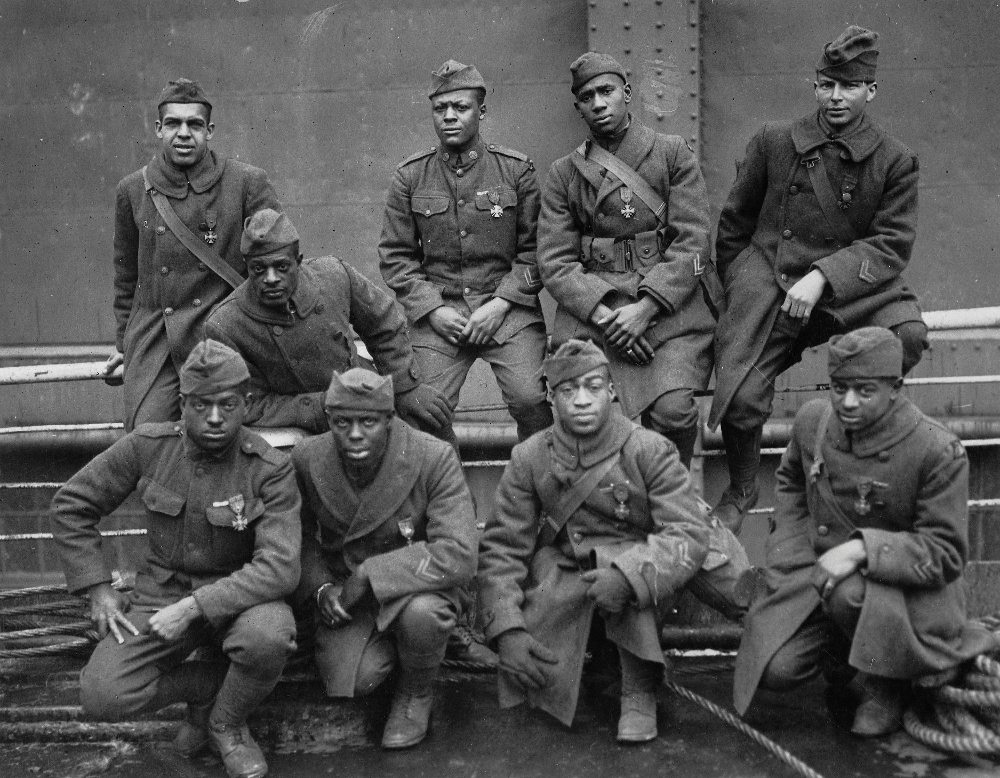

America’s demobilization occurred so rapidly that many soldiers spent less time overseas than they had spent training and awaiting assignment in Europe. The nation practically “beat plowshares into swords” in 1917 and 1918 with the sudden conversion to a wartime economy. After the armistice, the nation returned to civilian production in an even shorter amount of time. Days after the war ended, the federal government canceled $4 billion worth of contracts for weapons and other military items. Although the government offered various payments to ensure that US companies did not lose money for these broken contracts, the sudden end of the war resulted in high levels of turnover within wartime industries. These jobs were lost just as soldiers were returning from Europe and seeking employment. Pent-up consumer demand led to the creation of new jobs creating consumer goods and within the construction industry. However, the war had also created high inflation, which reduced the buying power of consumers. Organized labor had often secured contracts that alleviated these forces during the war, but most of these modest wage gains were eliminated once workers were no longer in high demand.
Figure 5.25

As this chart indicates, the 116,000 Americans who lost their lives in World War I were but a fraction of the total number of combat deaths suffered by the Allied Powers. In addition to the other costs of battle, many Europeans felt that Americans such as Woodrow Wilson were in no position to dictate the terms of the postwar settlement for this reason.
One of the most significant effects of the rapid demobilization was the removal of women from industrial jobs and other positions that had previously been regarded as male occupations. Women’s employment in these fields had not occurred in large enough numbers or with the duration needed to fully challenge traditional views about the nature of gender and labor. The shift from home labor to factory labor meant that the small number of young women who found jobs in industry might enjoy larger amounts of discretionary income. However, many male and female reformers worried about the effect of physical labor on women’s bodies. Some even predicted that wearing trousers might disrupt gender relations and may even cause damage to reproductive organs. More common were concerns that the proliferation of female labor jeopardized the male position of breadwinner and would place downward pressure on the higher wages male labor had commanded in the past. If the war created job opportunities for some women, peace had the opposite effect. The brief experience of these women in industry and the continuing importance of women as clerks, telephone operators, secretaries, teachers, nurses, and other professional positions did lead to some changes for women. Combined with their growing political power as voters, women convinced the federal government to create a permanent Women’s Bureau in the Department of Labor.
The war officially ended when Germany signed the Treaty of VersaillesWas signed between Germany and the remaining Allied Powers on June 28, 1919. In addition to officially ending World War I, the Treaty of Versailles required Germany to admit guilt for starting the war and pay reparations to compensate many of the nations it fought against., although the US Senate rejected its provisions. President Wilson had high hopes that he could shape the treaty in a manner that would reduce the conditions that had led to the war. A year before the war ended, Wilson proposed a blueprint for a peace based on fourteen principles. The first five of Wilsons’ Fourteen PointsBased on a speech given by President Woodrow Wilson to Congress, the Fourteen Points were various provisions intended to prevent wars in the future by promoting free trade, diplomacy, national self-determination, and disarmament. attempted to promote free trade, encourage arms reduction, and reduce the number of overseas colonies. The next eight provisions dealt with self-determination for Southern and Central Europe—areas that had previously been claimed various empires but that might be used to create a patchwork of independent nations. Wilson’s fourteenth point was the linchpin of the entire plan, or at least its goal to “end all wars” in the future. It sought to create a “concert of nations” by creating an international organization that would mediate disputes between nations and prevent aggressor nations from attacking others.
Republicans and a number of conservative Democrats feared that the United States would surrender its sovereignty if they joined Wilson’s proposed League of NationsAn international organization formed after World War I to promote global security and prevent future wars through collective actions of its member nations. The United States never joined the League of Nations, which was largely ineffective in preventing conflicts between nations in the years leading up the Second World War.. In addition, Wilson failed to include or even seek the advice of leading senators regarding the peace process that was discussed at Versailles—a critical error that left him open to charges of acting unilaterally. Many of Wilson’s ideas were incorporated into the final version of the Treaty of Versailles; one example is the creation of nine new nations in Eastern Europe. Liberals hoped that these new nations would reduce ethnic conflicts and promote democracy, while conservatives in Europe and the United States hoped that these states would serve as a buffer and insulate Western Europe from Communism.
In exchange for accepting many of Wilson’s ideas and creating the League of Nations, representatives of the Allied Powers demanded and received harsh territorial and financial concessions from Germany. One of the most significant of these concessions was the agreement to pay $33 billion in reparations to the Allied Powers to compensate for their losses in the war. Germany was also forced to agree it had started the war and was alone in the blame for the war’s consequences. Germany was forced to surrender the territories of Alsace-Lorraine to France, abandon its colonies, and reduce the size of its army; it was prohibited to develop offensive weapons, such as submarines or military aircraft in the future. The result of these penalties crippled the new German state. It also angered many Germans, and this anger facilitated the rise of Adolf Hitler during the 1930s. In addition, the United States never joined the League of Nations due to its rejection of the Treaty of Versailles and a return to isolationism.
Figure 5.26

A map of Europe showing the national boundary realignment following World War I and the Treaty of Versailles.
In addition to the Treaty of Versailles, policies affecting the future of the Middle East were determined in the aftermath of World War I. England had issued the Balfour DeclarationA communication by British Foreign Secretary Arthur Balfour during World War I that expressed his belief that the British government should support the creation of a Jewish state in Palestine. during the war. Named after the foreign secretary who framed the document, the Balfour Declaration expressed the support of the British government toward the creation of a Jewish homeland in Palestine. After the war, Britain was assigned the responsibility to administer Palestine, and Jewish residents throughout Palestine and throughout the world called on Britain to make good on these sentiments. However, the British had received Arab support in World War I and recognized that the Arab majority in the Middle East would strongly oppose anything that might lead to a Jewish state. The British were especially concerned about the stability of the oil-rich countries of the Middle East. As a result, the British had also declared during the war that they would support Arab nationalism and ensure that the rights of all peoples in the Middle East would be protected. Because the British had invested millions in oil exploration, they wanted assurance that any actions would not jeopardize their standing with local Arab leaders.
Statements of support for Arab control of Palestine and the Balfour Declaration contradicted with one another and were easy to make when Britain had no control of the region. However, at the conclusion of World War I, the Allies dissolved the Ottoman Empire, and the French took control of Syria and Lebanon. Other Middle Eastern states such as Iraq were placed under the control of the British who were also appointed as the administrators of Palestine. In each of these “mandates,” the British and French were responsible for supervising the transition from part of the Ottoman Empire to full independence. This proved especially difficult, as British leaders had promised Palestinian leaders that they would provide aid for the creation of a sovereign Arab nation. Complicating the matter was that Jews and Arabs, along with the small number of Christians in the area, all considered Palestine as sacred land. Nationalist forces in each of these areas felt betrayed as they had supported the British and French in World War I. Jews throughout the British Empire shared similar feelings as Britain failed to act on the Balfour Declaration. Instead, Britain sought to administer in these areas in ways that secured access to oil. The British sought to prevent conflict rather than resolve what many believed was an irreconcilable struggle between Jews and Arabs over the future of Palestine.
Figure 5.27

The strength of the movement continued to be local organizations such as this one in Cleveland, Ohio. Male politicians came to understand that continued opposition to female suffrage would likely cost them their jobs as more states revised their voting laws in response to grassroots campaigns organized by women such as these.
Even in communities where black and white women worked together to promote suffrage, most black women formed their own organizations and the rank-and-file membership of these groups lived separate lives. White National American Woman Suffrage Association (NAWSA) members were often more liberal regarding the color line, yet they also hoped to attract a larger following in the South and often catered to the racial prejudices of some of their members. For example, 5,000 suffragists from across the country met in Washington, DC, under the auspices of the NAWSA in 1913. The white leadership declared that representatives of black women’s organizations should march in their own separate columns behind the whites.
Ida Wells had been a member of NAWSA for many years, and although she had formed an organization for black suffragists in Chicago, her presence in Washington, DC, was as part of the integrated Illinois chapter of NAWSA. As a result, the decision that Wells must march in the back of the column angered her and several other Illinois women who vowed to march alone with Wells between the members of various black suffrage associations and the NAWSA. The rest of the white suffragists worried that the presence of white and black women marching in the same column might offend Southerners at the very moment when the suffrage movement was beginning to gain ground in that area of the country. As the march began, the insults hurled from the men who had lined the streets led few to notice that Wells had joined the otherwise white procession. Despite her willingness to stand by them as they crossed a gauntlet of jeers and taunts, most whites would have preferred that Wells and other black women would have not participated at all. As had been the case with other movements for social justice, the failure to overcome racial prejudice would reduce the effectiveness of the suffrage movement. For example, the Southern States Women’s Suffrage Conference was dedicated to promoting state laws that would explicitly limit the vote to white women despite the obvious contradiction with the Fifteenth Amendment.
The suffrage movement also remained divided between those who accepted society’s notions of gender and those who sought to challenge those conventions. The conservative wing of the women’s suffrage movement stressed the compatibility of voting within the unique character and responsibilities of women in society. Others were more radical, advocating not only suffrage but also complete gender equality in all aspects of society. These two ideas about suffrage were evident in a debate between sociologist Charlotte Perkins Gilman and NAWSA president Anna Howard Shaw. Shaw emphasized the ways that voting was consistent with women’s roles in the home. She advanced the more conservative idea that women could purify politics and promote reform in ways that were compatible with the notion of a separate sphere of activity for women and men. Gilman saw the vote more as a step toward emancipation from the separate sphere, eliminating one of the ways that women’s confinement to the home had been perpetrated and justified in the past. Radicals such as Gilman represented a small minority even within the suffrage movement. However, their ideas would have a profound impact as they represented the vanguard of the feminist movement during this era.
Figure 5.28

The artist who produced this 1915 image entitled “The Awakening” depicts the goddess of liberty marching from the west, where women had secured the right to vote, to the east. The image challenges the contemporary notion that the vector of American progress moved westward.
Alice Paul and Lucy Burns were radicals who also understood the tactical value of conservative arguments in favor of suffrage. They also were unsatisfied with the state-by-state strategy of the NAWSA and convinced the leadership of that organization to establish an organization dedicated to promoting a constitutional amendment extending the vote to all citizens regardless of gender. Paul led this organization, which was known as the Congressional Union. While the NAWSA grew to 2 million members, Paul’s organization was a small group of determined activists who lobbied on behalf of a federal amendment. The NAWSA continued to push for local reform using the successful tactic of minimizing feminist ideas and promoting the vote as a reform measure. Eventually, Paul would abandon the NAWSA for this reason. Her Congressional Union became the National Woman’s Party (NWP) and was free to celebrate women’s equality as the heart of the suffrage issue after leaving the more conservative NAWSA. NWP members held protest marches and directly confronted male leaders who continued to oppose suffrage. Paul and her supporters even picketed the White House and chained themselves to the gates when they were ordered to leave. Their arrest was scandalized by many mainstream suffragists in NAWSA who believed that the NWP was alienating moderate men and women who might otherwise support suffrage. However, the conditions these women faced while in prison generated sympathy and led many undecided women and men that the opponents of women’s suffrage were not genuinely concerned about the plight of women. The arguments and the tactics of the NWP also convinced many on the fence that groups such as the NAWSA were not so radical after all.
By 1912, ten states and/or territories recognized women’s right to vote. In 1913, Illinois granted partial suffrage for women voting in presidential elections, becoming the first state east of the Mississippi to do so. Iowa’s Carrie Chapman Catt took over the NAWSA in 1915 and renewed the effort to pass a constitutional amendment; she also pushed for state-by-state reform. Catt and other NAWSA leaders also began to promote suffrage as both as a natural right belonging to all citizens and as a means of promoting reform, healing the divisions between more radical and conservative ideas within the movement. She and other NAWSA leaders continued to oppose the demonstrations of radicals, yet strongly opposed the violence these women sometimes faced from male hecklers and police. Reports that Alice Paul and other women had been beaten and force-fed after waging a hunger strike put those who opposed suffrage on the defensive. Claiming to oppose suffrage as a matter of “protecting” women from the filth and corruption of the outside world, these beatings of women exposed the hollowness of this brand of “chivalry.”
In 1917, Arkansas and New York become the first Southern and East Coast states to approve suffrage, although Arkansas law restricted the vote to white women in primary elections. The battle continued throughout the South and the East, but even states such as Maine that had strong Progressive tendencies voted down a 1917 women’s suffrage referendum by a two-to-one margin. The failure in Maine reflected the ways that the war had divided voters. Antisuffragists in Maine defeated the measure, largely by arousing populist hostility toward national feminist figures and antiwar leaders. These same campaign methods derailed the rapid progress the suffrage movement had enjoyed and threatened to split the entire movement. However, NAWSA adapted by throwing its support toward the war effort, and the majority of suffragists distanced themselves from leading pacifists. Many women who had opposed America’s entry rallied behind the war effort in ways that “proved” their patriotism. With millions of women in the workforce and tens of thousands serving overseas in various nursing and military auxiliaries, even President Wilson decided it was time to end his opposition to women’s suffrage.
In 1918, a proposed constitutional amendment granting universal suffrage passed Congress with the support of Jeanette Rankin of Montana, the first and only woman in Congress at this time. Even though President Wilson declared the measure vital to the US war effort, conservatives in the Senate defeated the amendment. NAWSA redoubled their efforts to win popular support for the measure, while the NWP and other more radical women increased the political pressure on male politicians who had opposed the measure. Others pointed out that women in most European countries had been granted the right to vote, including Russia in 1917, Britain in 1918, and Germany and Austria by 1919.
Within the United States, thirty states and territories had approved women’s suffrage in at least some elections by 1919, and half of those states recognized the right of women to vote in all elections. As a result, members of the NWP could potentially mobilize women voters against any opponent of women’s suffrage in nearly half of the congressional and senatorial elections that would be held in the future. This single fact more than a gradual recognition of gender equality convinced two-thirds of the Senate to approve a women’s suffrage amendment on June 4, 1919. The next step was the required ratification by at least three-fourths of the states (thirty-six states at this time). After fourteen months of daily activism, Tennessee became the thirty-sixth state to ratify the amendment in August 1920.
Figure 5.29

This map showing states that had granted full or partial female suffrage by 1919 demonstrates that the success of the Nineteenth Amendment was directly related to activism at the local and state level.
Of all the former Confederate states, only Texas, Arkansas, and Tennessee voted in favor of the Nineteenth Amendment. Conservatives in the South defeated women’s suffrage by comparing it to the expansion of the electorate during Reconstruction. “The southern man who votes for the Susan B. Anthony amendment votes to ratify the Fifteenth Amendment,” declared South Carolina senator Ellison Smith. However, when nearly every state outside of the Deep South voted for ratification, the intrepid efforts of Southern suffragists who had faced down mobs in their failed attempts to secure their rights were finally rewarded. From the perspective of hindsight, it is clear that NAWSA’s calculated sacrifice of its African American members and its explicit rejection of racial unity did little to promote suffrage among white Southerners. In addition, states could still require poll taxes and literacy tests that limited the impact of suffrage for many white and black Southern women. The vote was also withheld from many nonwhite women when federal courts ruled that the Nineteenth Amendment (and the rest of the Constitution) did not apply in overseas colonies. Ironically, women suffrage was adopted by Spain in 1931—just after the women of Puerto Rico secured their right to vote, but prior to women’s suffrage in the Philippines.
By 1920, suffrage had attracted the support of relatively conservative women, leading the more radical and early supporters of suffrage to use a new term to identify themselves and their reformist agenda. Small but influential groups such as a New York women’s organization known as Heterodoxy promoted feminismFeminism is a term that has evolved into a variety of meanings. Among American feminists at the turn-of-the-century, the term feminism referenced one’s belief in complete gender equality beyond tactical gains that might be achieved through specific movements for equal employment, suffrage, or property rights.—a word to describe complete gender equality. For many middle-class women, the privilege of choosing between male candidates once per year was hardly a reprieve from the suffocating comforts of their domestic spheres. The women of Heterodoxy and hundreds of other women’s groups included scientists, scholars, ministers, and businesswomen. They sought equal educational and employment opportunities, an end to gendered assumptions about sexual freedom, and an end to prohibitions against spreading information about birth control. “All feminists are suffragists,” these women explained, “but not all suffragists are feminists.”
A small number of feminists employed as professors and scientists during this era used their skills and training to discredit earlier “scientific” assertions that women were inherently lacking in mental facilities. While other feminists employed logic and rhetoric to argue that women enjoyed all of the talents and capabilities of men, these scholars used the scientific method to debunk myths and demonstrate the scientific veracity of gender equality. For these and other feminists, equality began rather than ended with the ballot box. They argued that women must no longer be defined in ways that assumed that selfless devotion to husband and family was the only aim of womanhood. Many differed, however, when it came to discussing the unique capacities and roles of women in society. While some feminists yearned to abolish traditional gender roles, the majority accepted the basic premise of marriage as a partnership and hoped to give women the freedom to accept or reject traditional gender roles in their own lives.
By the God of Heaven, we are cowards and jackasses if now that the war is over, we do not marshal every ounce of our brain and brawn to fight the forces of hell in our own land.
We return.
We return from fighting.
We return fighting!
Make way for Democracy! We saved it in France, and by the great Jehovah, we will save it in the United Stated of America, or know the reason why.
—W. E. B. Du Bois, The Crisis, May 1919
W. E. B. Du Bois organized a conference attended by Africans and African Americans from fifteen nations that met in Paris during the Treaty of Versailles. These delegates presented their demand that Germany’s African colonies be granted self-determination to form their own independent nations. The demand was consistent with Wilson’s Fourteen Points and the provision in the Treaty of Versailles that granted independence and self-determination to the former residents of Austria-Hungary. However, Wilson and the other delegates ignored these demands, and Germany’s African colonies were simply transferred to the European victors. Americans displayed similar disregard toward the perspectives of women and minorities during and after the war. Committee on Public Information (CPI) propaganda portrayed the United States as an all-white nation where white men served as protectors and white women were virtuous guardians of the home front.
African American men and women shared high expectations that the experiences of war might reorder society along more egalitarian lines. Progressive reformers had speculated that the trials of war would also serve as a crucible for social change, thereby validating the sacrifice of a generation. However, War Department policy still restricted African Americans to segregated units commanded by white officers above the company level. Native Americans were permitted to serve in “white” battalions, but were often grouped together and given the most dangerous assignments. As a result, the mortality rate for Native American troops was more than twice as high as the average for the rest of the military. One of these unofficially segregated units, the 142nd Infantry, was drawn largely from separate units of Native Americans within the Oklahoma and Texas National Guard. The 600 Native Americans of this unit distinguished themselves in combat, and many members were awarded medals by the French for their uncommon valor. Several Native Americans such as the Choctaw were highly valued soldiers within the American Signal Corps, using their indigenous language to send coded messages that only native speakers could decipher. These “code talkers” would become even more crucial to the US war effort in the Second World War.
African Americans experienced severe discrimination in every aspect of the military. After being denied enlistment opportunities when the war began, black men were almost twice as likely as other men to have their request for draft exemption rejected. Review boards attempted to present these statistics as the result of factors other than race. Although they were exaggerated, some aspects of their defense were valid, but even these were simply the result of historic discrimination. For example, because many blacks had been excluded from skilled trades, they were less likely to be eligible for deferments based on the importance of their civilian jobs. Furthermore, many black husbands and fathers were so poor that the low pay enlisted men received would actually increase their family income. Southern review boards often cited this tendency when dismissing exemptions requested by black husbands and fathers, although white men who had dependents were usually granted exemption. One of the most infamous cases of discrimination involved the War Department itself rather than the local draft boards. Claiming that he was medically ineligible, the army attempted to force Lieutenant Colonel Charles YoungThe highest-ranking African American officer at the outbreak of World War I, Charles Young confronted efforts by military officials to force him into retirement. to retire. As the army’s highest-ranking black officer, Young was in a position to command an independent black regiment and would likely be appointed over white officers. However, Young exposed the scheme by riding his horse hundreds of miles to personally oppose the military’s decision and publicly demonstrate his fitness for duty. The army responded by delaying the issue. Young was eventually promoted but was assigned to a segregated training camp in Illinois where he would not be in a position to command white soldiers or officers.
Figure 5.30
These African American soldiers from New York were among those who were awarded medals by the French government for heroism during World War I.
The military also intended to prevent black officers from commanding these segregated units until protests by black communities and the National Association for the Advancement of Colored People (NAACP) led to a compromise. The War Department declared that black men could serve as lieutenants and captains, but white officers would occupy the higher ranks even within all-black battalions, brigades, and divisions. In addition, the army at first intended to appoint relatively few black officers at any level. White military officials predicted that it would be unlikely that more than a select few men of color would ever prove themselves capable of serving as officers, and even fewer that might make them reconsider their position against promoting black men as field-grade officers.
The War Department established a training school for black officers at Fort Des Moines in June 1917. Whites in Des Moines initially protested against the quartering of black troops near their town; however, area black reporters proudly declared that after a few months, the decorum of the men as well as the economic benefits of the camp had led to a much friendlier atmosphere between the townsfolk and the camp leaders. “The people of Des Moines felt at first that they would have to be on their guard against the men at the Negro training camp, and several instances of discrimination were shown,” the African American press of Kansas City reported, “but the camp has won Des Moines.” The camp brought to Iowa and the Great Plains future black leaders such as James B. Morris Sr., a graduate from Howard Law School. After completing officer training and serving in the war, he returned to Des Moines where he served as deputy county treasurer and purchased Iowa’s leading black newspaper, the Iowa Bystander.
Morris was one of nearly half a million African Americans who settled in Northern and Western cities during the war years. This movement was known as the Great MigrationRefers to the movement of 1.5 million African Americans out of the American South between 1910 and 1930. Approximately half a million of these individuals migrated during World War I in order to take advantage of wartime employment in Northern factories. and was especially pronounced in large cities such as St. Louis, Chicago, Cleveland, Detroit, and a host of smaller manufacturing cities such as Gary, Indiana, and Youngstown, Ohio. Black workers faced enormous discrimination while their families had limited options for housing in these segregated Northern and Midwestern cities. However, the opportunity to work in a factory provided upward mobility for these men and their families. Black women were seldom hired in the better-paying jobs that were open to women. However, most who sought work were able to find jobs in domestic service and other fields that were being abandoned by white women. That so many families would move halfway across the country so that a male breadwinner might occupy the toughest and lowest-paid factory jobs demonstrated the continued hardships and limited job opportunities blacks faced in the South. However, a significant number of black men found that the war had also created better job opportunities in leading Southern industrial cities such as Birmingham and Atlanta.
Some black workers were able to secure federal government jobs or positions as laborers in the defense industry, and wages were monitored by the War Industries Board. Within the government’s wartime arsenal, labor contracts made no distinction of race. Unlike white women, black women seldom had the opportunity to change jobs and were limited to taking positions that were previously held by white women or young boys. In many cases, only white women were able to replace white men in the labor force, even within unskilled jobs. As white women entered the war industries, black women backfilled the vacancies left in domestic and industrial service. Although they were often given the oldest and hardest machines to operate, industrial work was welcomed as a change of pace from domestic service by those black women who were able to secure positions. Black women were often segregated from other employees and placed in basements or other undesirable parts of the factories. However, the fact that they were separated encouraged them to develop strong networks of support. Many of these women insisted on and received black supervisors. They registered complaints collectively, and when they felt they were being mistreated, or when they discovered better work elsewhere, they often abandoned their jobs together.
Contemporary observers of black women in industry often failed to recognize these assertive traits as such. Reflecting the narrow-mindedness of their times, critics portrayed black women as ignorant, lazy, unaccountable, and unprepared for wage labor. Recent historians have challenged this interpretation and explained why such a narrow and prejudiced view might have persisted for so many years. In short, racist explanations that assumed black shortcomings were the result of innate character differences justified the status quo and presented the comforting fiction that racism was a problem of the past. This lack of investigation perpetuated the widely held assumption that blacks were denied equal opportunity during and after the war because they were simply a different caste of people. By ignoring an era in which blacks were actively contributing to the nation’s war effort, historians perhaps unconsciously defended a society that continued to deny black citizens equal rights.
Many historic accounts of the home front tell of a homogenous and optimistic nation that was part of a “great pull together” to defeat tyranny abroad. In many ways, these accounts accurately portray the view of many Americans toward the war effort. Contemporary accounts record the collective actions of nearly every aspect of society. Scout troops organized relief drives, while families participated in meatless and wheatless days. The public celebrated the importance of work and dignity of labor. By framing the war as a moral struggle and by viewing labor as an essential contribution to the war effort, citizens on the home front forged a culture that ennobled their work and gave meaning to their sacrifices.
A deeper investigation reveals that the war also created a xenophobic hysteria that led to the creation of internment camps for some resident aliens and suspected enemy sympathizers. Community organizations and even private businesses formed their own investigation bureaus and encouraged citizens and employees to report any disparaging and “un-American” comments or behaviors they observed among their neighbors and fellow workers. The possibility of disloyalty and sabotage created a situation where individual liberty, collective security, and the interests of the government were weighed against one another. In most instances, the rights of the individuals were respected. However, from the perspective of pacifists, Socialists, and other dissenting groups, the war was a time where their views were brutally repressed.
In 1917, Congress passed the Espionage Act, which criminalized a number of behaviors such as seeking to disrupt military recruitment or otherwise hinder the war effort or assist the enemy. A provision that would have enforced government censorship was removed from the bill before it was passed, yet some still believed the law violated principles of individual freedom. Although controversial, the law was repeatedly upheld by federal courts. Fewer would defend the Sedition Act of 1918A notorious law that criminalized speeches that sought to discredit the US government or the US war effort during World War I., which extended the Espionage Act and made criticizing the federal government during a time of war a criminal offense. Largely owing to the short amount of time before the passage of the law and the end of the war, very few were convicted under the terms of the Sedition Act. However, the newly appointed Attorney General A. Mitchell Palmer called on Congress to extend the provisions of the law even after the war ended.
Palmer’s tenure as attorney general coincided with a period of increased concern about the possible spread of Socialism that is today known as the Red ScareA period of increased fear and even widespread paranoia regarding potential threats posed by anarchism and Communism between 1919 and 1920.. During this period, hundreds of leftists and Socialist leaders were arrested with little concern for due process of law. During the war, some Socialists had criticized America’s war effort as an action that merely propped up one group of imperialists against another. From perspective of Lenin and many others, World War I was being waged “to decide whether the British or German group of financial marauders [was] to receive the most booty.” American Socialists generally viewed war as merely a continuation of historical quest for expansion to bolster Capitalism from its own decline. Although few Americans actually joined Socialist organizations, many workers shared their reservations about the sincerity of their government’s claims that the war was being waged on behalf of their freedom. They were especially suspect about those within industry that called on them to work harder and sacrifice more while members of the upper classes drew the greatest profits.
Figure 5.31

J. Edgar Hoover was only twenty-nine years old when this photo was taken in 1924, but he had recently been appointed to head the Bureau of Investigation within the Justice Department.
A small percentage of workers registered as conscientious objectors and sought military deferments. These young men actively challenged widely held assumptions about gender roles and patriotism, adopting in their place a position of pacifist nonconformity that placed them at odds with the society around them. Some of these men lost their jobs, were imprisoned, or were even physically beaten for expressing opinions that were not supported by the government or the majority of Americans. The Bureau of Legal Advice was an organization formed during the war as an advocacy group that sought to protect a wide range of political dissent. While most Americans believed that these individuals had the right to their own opinions, the actions of many dissenters led to difficult decisions about the line between dissent and disloyalty. For example, Emma Goldman and her lover Alexander Berkman were sentenced to two years in jail for conspiring to “induce persons not to register” for the draft. Both had a history of supporting violent anarchism and Berkman had even conspired to murder the president of US Steel.
Berkman’s advocacy of violence was not typical of those on the left, although a wave of bombings by self-styled anarchists in the summer of 1919 furthered the impression of Socialists and other radicals as intrinsically violent. The actions of a right-wing vigilante group that called itself the American Protective League (APL) was also atypical. The APL harassed, spied on, and occasionally assaulted pacifists and Socialists. Attorney General Palmer at first sought to neutralize the potential threat of all radicals who advocated violence, but not long before his Justice Department began to mirror the tactics of the APL. An ambitious twenty-four-year-old recent law school graduate named J. Edgar Hoover was hired to lead a new branch of the Justice Department charged with domestic surveillance of suspected radicals. Hoover’s new agency would eventually expand and become its own bureau—the Federal Bureau of Investigations (FBI).
Hoover and Palmer responded to the perceived threat of Socialist labor leaders, as well as black civil rights leaders who were beginning to sound more militant by conducting quasi-legal raids, illegal surveillance operations, and unconstitutional mass arrests where individuals were detained for simply being a member of a particular leftist organization. The mass arrests became known as the Palmer RaidsA series of legal and extralegal raids on suspected labor organizers, leftists, and political dissidents in the United States after World War I. US attorney general A. Mitchell Palmer was convinced that such methods were necessary to prevent the spread of dangerous radical ideas and organizations. He approved the use of controversial surveillance tactics by Department of Justice officials, including a young assistant named J. Edgar Hoover. and remain one of the most dramatic examples of the potential excesses of federal law enforcement in American history. Although Palmer originally enjoyed the support of Congress and the public, his department’s illegal surveillance methods and mass arrests soon led to greater skepticism about the actual danger of black radicals and political dissidents. Although Palmer made efforts to limit some of his department’s excesses and even recommended the pardon of the increasingly radical Eugene Debs, Palmer’s declaration that militant Socialists were planning to launch a nationwide revolution on May 1, 1919, made many Americans reconsider their fears of anarchists and radicals when no violence occurred on that day.
Figure 5.32

This collage of newspaper reports describes the labor conflict leading up to the Bisbee Deportation. The mining companies and local government officials herded striking miners onto cattle cars destined for Columbus, New Mexico, the same community that had recently been sacked by Pancho Villa.
The Red Scare was more than an overzealous response by the federal government to the threats and deeds of a few militant radicals. It also had important economic ramifications as the Justice Department moved to isolate union leaders by labeling them as “Reds” who were anti-American and loyal only to Russia. Using loosely constructed allegations of political disloyalty, Palmer used the power of the federal government to halt a nationwide strike of coal miners in November 1919. Two years prior to Palmer’s action on behalf of coal operators, state officials in Arizona had used similar accusations of disloyalty to justify their intervention on behalf of the operators of copper mines. The International Workers of the World (IWW) had organized thousands of copper miners in and around Bisbee, Arizona, and were waging an effective strike in the summer of 1917. Their opponents declared that the leaders of the IWW were part of a Communist and/or pro-German conspiracy to spread labor discontent. City and state authorities sided with the mining companies and rounded up the leaders of the movement along with a thousand IWW supporters. In what became known as the Bisbee Deportation of 1917, these former copper miners were effectively kidnapped and abandoned at a railroad depot in the New Mexico dessert. Had it not been for the intervention of local residents and the US Army, which built a refugee camp for the workers, the government’s deportation order might have become a death sentence.
One of the most significant labor strikes in US history erupted in February 1919 and was likewise influenced by the anti-Ccommunist hysteria of the era. Shipyard workers throughout Seattle had long been promised that they would receive pay raises once the government ended its wartime price controls. Because companies could not charge market prices for a number of goods, employers explained, workers would not receive the kinds of pay raises that would naturally occur during a wartime boom. When the war ended and the government ended its policy of price controls, however, the long-expected raises failed to materialize. In response, nearly 40,000 workers in the region’s shipyards went on strike. These men and women were joined by an additional 25,000 union members throughout the city who engaged in what became known as a “sympathy strike.” Until the shipyard workers received the raises they had been promised, most members of the city’s 110 local unions vowed that they too would not report for work.
The Seattle General Strike of 1919 had profound implications regarding the potential impact of strikes and worker solidarity. If successful, labor advocates and opponents both predicted, other cities would experience similar strikes and the balance of power between labor and capital might forever be altered. Those who opposed the strikes predicted that a wave of general strikes would destroy the foundation of America’s modern economy and open the door to anarchy. However, conditions in Seattle during the strike were remarkably calm. Because most stores and streetcars were no longer being operated, thousands of union members voluntarily provided essential services such as food delivery and garbage collection. Whether these informal measures would have been adequate in preventing civil unrest and hardship is unknown. The mayor effectively declared martial law and threatened to use federal troops to arrest those who refused his order to go back to work. As dozens of labor leaders were arrested and the prolabor newspaper was seized by local police, the strike quickly ended. Federal troops were not sent to Seattle, as the strike itself lasted less than a week. Most Americans believed that the government’s heavy-handed methods were justified in order to prevent “Bolshevism” from spreading to America. This reaction was representative of the change in public opinion from Progressivism to a more conservative political orientation that would typify the 1920s.